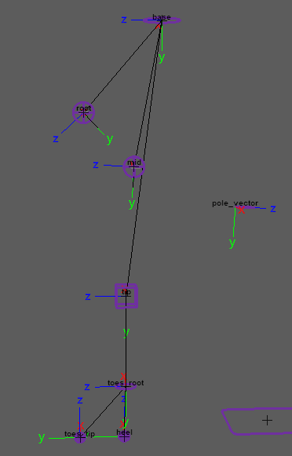
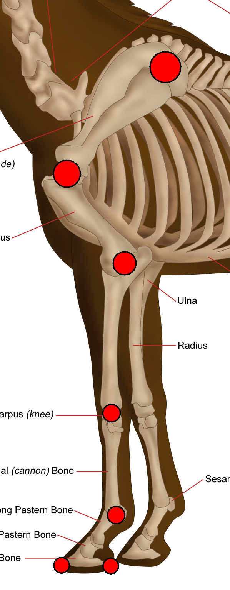

Creates the front leg of a
4-legged animal (quadruped). Features include IK/FK, ribbon, twist, soft IK, stretch, pin ctrl,
etc.
Guides:

Attributes:
- 'Ctrls
Scale' - Scale all the node ctrls. Note that the
attachments 'Ctrls
Settings' and 'CtrlsShape' will override
this. [Video]
- 'Clean
Transformations' - If checked, the zeroed pose will be
the same as the bind pose; if unchecked, when zeroing
the ctrls, they will align with a world axis specified in the following two
attributes. [Video]
- 'World
Orientation' - The world axis the ctrls will align with when zeroed.
Usually, this attribute's default value is the correct value. [Video]
- 'World Orient
Twist' - Along with 'World Orientation', defines the ctrls zeroed pose.
Usually, the default value of 0 is the correct value. [Video]
- 'Expose
RotateOrder' - Exposes all the ctrls 'RotateOrder' attribute in
the Channel Box. [Video]
- 'Secondary Ctrls' -
Secondary ctrls are added under some ctrls to help prevent gimbal lock.
A visibility attribute is
added to the parent ctrl. [Video]
- 'Ik Fk
Switch' - Select where the 'Ik Fk Switch' attribute and other shared attributes are
placed: [Video]
- 'switch_ctrl' - Places them on a ctrl that follows
the leg tip (default).
- 'proxy_attrs' - places them as shared attributes
(proxy attributes), on both the IK tip ctrl and the FK tip ctrl.
- 'Switch Ctrl Offset' - Position offset of 'switch_ctrl'
from the 'tip_jnt'.
- 'Volume' - Adds 'Auto
Volume' and 'Manual Volume' attributes.
- 'Pin Ctrl' - Add a 'pin_ctrl' that constrains 'mid_ctrl' when activated.
To activate this ctrl use the 'Pin' attribute on 'mid_ctrl'.
Use a 'SpaceSwitch' attachment for
'pin_ctrl' to properly use this feature.
- 'Mirror Behaviour' - Only affects
mirrored nodes.
- Unchecked - The IK
ctrls of mirrored nodes will align with the world, meaning that both legs will move and rotate
in the same direction (default for legs).
- Checked - The IK
ctrls of mirrored nodes will mirror orientations, meaning that both legs will reflect each other
(default for arms).
- 'IK
Twist' - The attribute 'Twist' is added to 'ik_tip_ctrl',
giving you another control over the IK chain twist.
- 'Stretch' - The attributes 'Auto Stretch' and 'Manual
Stretch' are added to 'ik_tip_ctrl' for control over the leg
length.
- 'Toggle Pole
Vector' - The attribute 'Toggle Pole Vector' is added to 'ik_tip_ctrl', which can turn off the pole vector
constraint.
- 'Soft
IK' - The attribute 'Soft Ik' is added to 'ik_tip_ctrl',
which helps fix the 'pop' in the animation when the IK chain gets fully extended.
- 'Ctrls
Translate' - If checked, animators will also be able to translate the FK
ctrls.
- 'Ribbon
Joints' - How many skinning joints each ribbon will have (total x2; upper
ribbon and lower ribbon). [Video]
- 'Ribbon
Twist' - Allow the ribbon joints to twist. Turn this off for creatures with external
skeletons, such as spiders, or for characters wearing rigid armor.
- 'Ribbon
Micro Ctrls' - Add a ctrl for every ribbon skinning
joint. [Video]
- 'Bezier
Ctrls' - Adds ctrls that deform the ribbon like a Bezier
curve. [Video]
- 'Bezier Ctrls
Offset' - Position offset of the Bezier ctrls from the joint chain.
Connections:
- 'Root Input' - Drives the ctrls of this
node except the 'ik_tip_ctrl' and the 'ik_pv_ctrl'. Usually driven by the spine node.
- 'IK Tip Input' - Drives the 'ik_tip_ctrl'
and the 'ik_pv_ctrl'. Separate from 'Root Input' because we often want the IK ctrls to move with
the 'Base' node.
- 'Root Output' - An output at the 'root_jnt'
(pelvis).
- 'Ankle Output' - An output at the
'tip_jnt'.
- 'Toes Tip Output' - An output at the
'toes_tip_root_jnt'.
_____________________________________________
Get Arise at: https://www.ariserigging.com